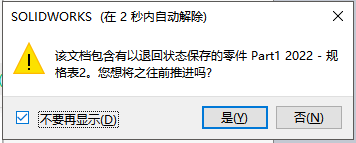
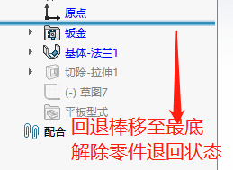
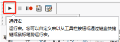
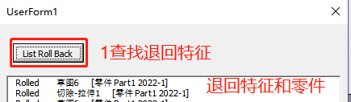

包含有以退回状态的零件
该文档包含有以退回状态保存的零件
在装配体中，如果有零部件正处于退回状态时，即会出现如下弹窗：该文档包含有以退回状态保存的零件。一般你只需要工具提示找到该退回零件，解除退回状态即可。如果无提示具体哪个零件时，你可以参考下列方法处理：
方法 1：回退棒调整
- 我们可以在设计树搜索快速定位到零件并编辑，如下：
2、编辑零件，把零件的回退棒移至最低（解除退回状态）即可。
方法 2：宏检查
有时我们发现弹窗并无提示具体哪个零件是退回状态时，你可能需要借助如下宏做查找。”RollBack.swp”宏将生成显示”退回状态”的报告；
注意：该宏不适用于轻化或大型装配体模式，你需要以”还原”模式打开装配体。
1、运行宏命令，并找到”RollBack.swp”宏文件；
2、进入宏窗口，使用此宏列举退回状态信息，查询到零部件；
3、重复操作方法1将退回棒移至底部即可。